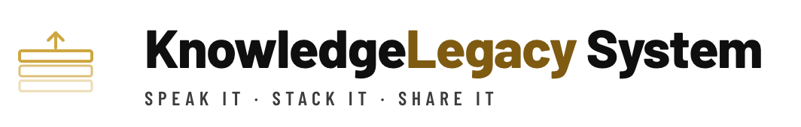
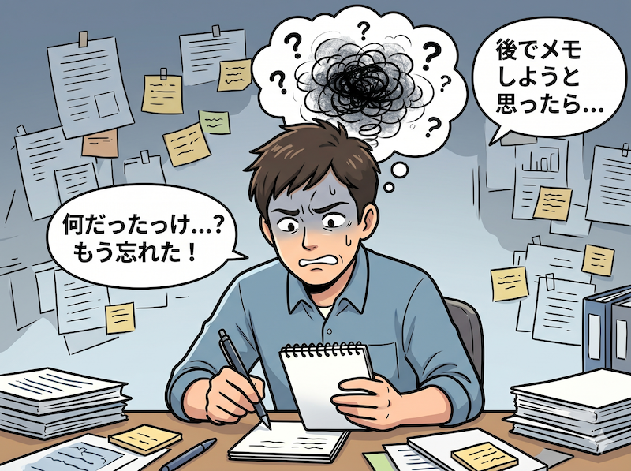
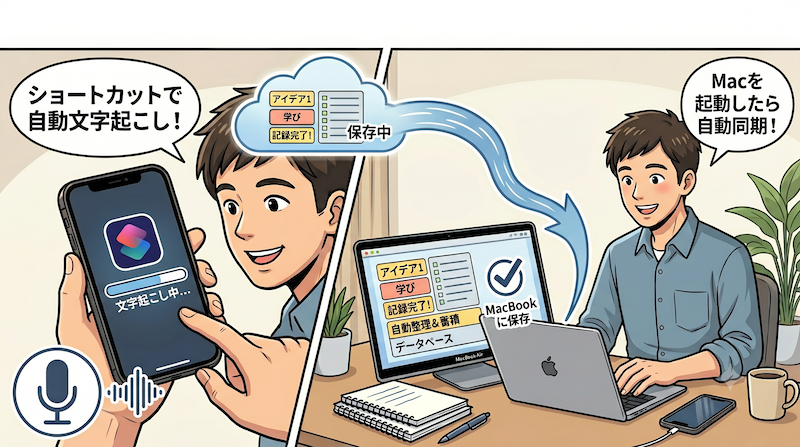
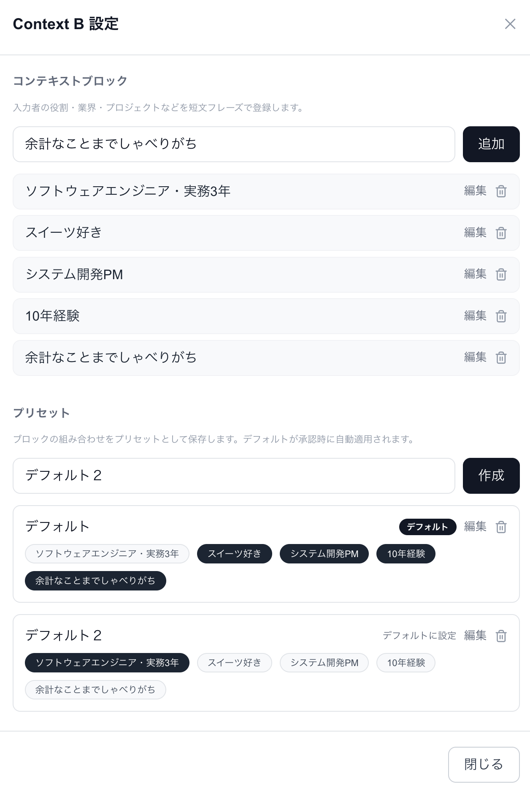
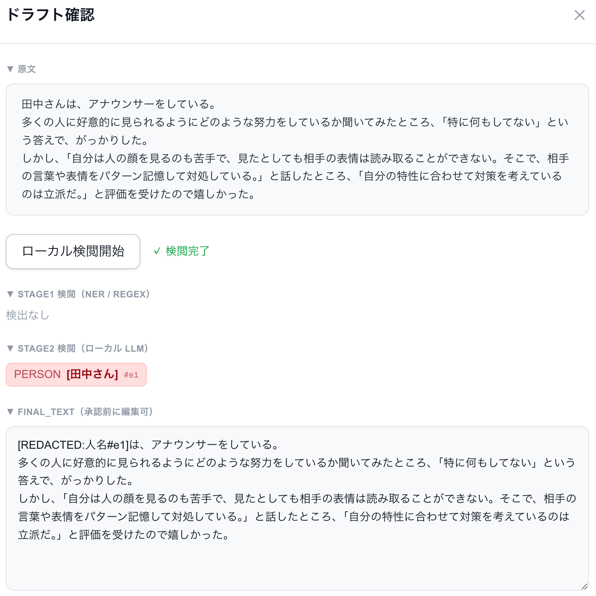
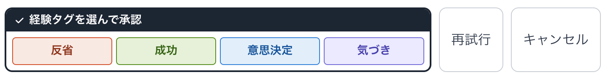
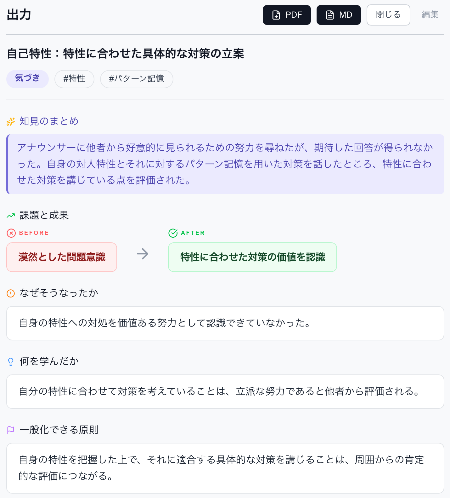

認知の消費を、
極限まで下げる
気づきは多忙な中で生まれる。しかし「書き残す」ための推敲が、知識蓄積の最大の壁だった。

「話す」と「承認する」だけで、知識が蓄積される
認知の消費を、極限まで下げる
機能・UI・技術のすべての選択において「ユーザーの認知をこれ以上消費させていないか」を問い続けた結果、以下の設計が生まれました。
各工程の認知負荷低減の工夫
音声入力 — 推敲そのものをなくす

話すことは推敲なしで思考をアウトプットできる唯一の手段。冗長な話し言葉はWhisperが文字起こしし、要点はAIが抽出します。
追加コンテクスト — 一言で要約精度を高める

「今日はキックオフMTG」などのコンテクストを一言加えると、AIの要約精度が向上します。任意入力のため、追加しなくても動作します。
集中モード連携 — 「同期しよう」という意識を不要に
集中モードの切り替えをトリガーに、MacBookが起動すると同時にデータが自動同期されます。「転送する」という作業が不要です。
二段階検閲 — 差分を読まずに確認できる精度へ

正規表現 + ローカルLLMの二段階で個人情報を検出。「修正前後の比較」ではなく「検出語句の強調表示のみ」を見せるため、全文を読み直す必要がありません。個人情報はローカルで処理され、クラウドに送られません。
タグの二段階設計 — 探す手間も整理する手間もなくす

人間は経験タグ（4択）を選ぶだけ。AIが内容に応じたハッシュタグを自動生成し、類似タグはローカルLLMが事前チェックします。後から「タグを整理しよう」という作業が発生しません。
Gemini送信と自動タグ付け — 後から整理しなくていい品質へ
「すでに使われているタグ一覧」をプロンプトに含め、既存タグを優先使用させることで不必要な新タグの生成を抑制します
新タグが提案された場合、ローカルLLMが既存タグとの類似度を評価。「#要件定義」と「#要件定義書」のような混在を事前に防ぎます
蓄積された知識はレポートとして出力できる

レポートは、PDFまたはマークダウンファイルとして保存して共有できる。
認知負荷を下げることは、習慣を設計することだった
「意識を高めて記録する」のではなく、「意識しなくても記録される」仕組みを作る。すべての設計判断は、この一点に向かっていました。